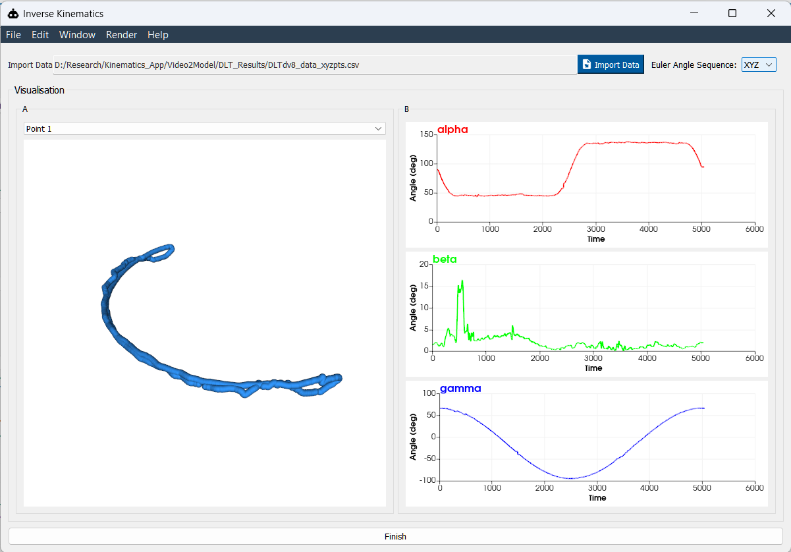

Inverse Kinematics Window#
{kind=link}

The Inverse Kinematics Window is designed to extract time‐series Euler angles from your wing’s 3D point data. Follow these steps to import, visualize, and export your kinematics:
—
FlapKine expects pre-computed 3D coordinates (e.g., from DLTdv [1]) rather than raw 2D images. Use this workflow to import your landmark trajectories:
Prepare your CSV file The file must contain one header row and one data row per time step, with these columns:
time, Ax, Ay, Az, Bx, By, Bz, Cx, Cy, Cz, Dx, Dy, Dz 0.00, 1.23, 4.56, 7.89, 2.34, 5.67, 8.90, 3.45, 6.78, 9.01, 4.56, 7.89, 0.12 0.01, 1.25, 4.58, 7.91, 2.36, 5.69, 8.92, 3.47, 6.80, 9.03, 4.58, 7.91, 0.14 ...
time: elapsed time in seconds (or frame index)
Ax, Ay, Az: X, Y, Z coordinates of point A
Bx, By, Bz: X, Y, Z coordinates of point B
Cx, Cy, Cz: X, Y, Z coordinates of point C
Dx, Dy, Dz: X, Y, Z coordinates of point D
Points A–D correspond to the four markers shown in the below image and processed in DLTdv.

—
Choose Euler Sequence
In the Euler Order dropdown, pick your desired rotation sequence (e.g., ZYX, XYZ, etc.).
This order determines how α (alpha), β (beta), and γ (gamma) are computed.
—
Visualize Point Trajectories
On the Left Panel, select point A, B, C, or D to see its 3D trajectory plot over time.
Use this to verify tracking accuracy before computing angles.
—
Compute & Preview Euler Angles
Once the sequence is selected, the window auto‐calculates α, β, γ at each timestamp.
Real‐time line plots appear below the 3D view for each angle component.
—
Export to Sprite Creator
When you’re satisfied with the results, click Finish.
The computed Euler angles and selected sequence are sent directly to the Sprite Creator Window for further processing.
—
References